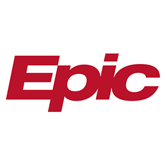

Professional
I work as a Product Engineer at a non-profit healthcare IT company,
specializing in integration 3rd party products with the Epic EHR.
I enjoy automating workflows with custom coding, and integration
systems through web services.

- Cadence and Prelude Proficiency
- FHIR integrations such as Zoom/Teams video visits, E-consults,
- Custom web services in interconnect and cache
- Build automation through cache coding
- Master file creation and maintenance including EMP/SER/DEP/EAF/LWS/EPR/LOM/HIP/HDR/E0A/E0G/E2N/E2U/E2R
- 3rd party integrations including Imprivata, OnBase, RightFax, Dragon, Midmark, Hillrom, Zoom, MS Teams, Rubicon, AristaMD
- Chronicles search and export/imports
- Custom cache coding for web based data manipulation

- OneSign and ConfirmID Certified Administrator
- Led over 30 OneSign implementations
- Appliance configuration, Epic integration , Deployment, Maintenance
- OnBase Certified API Developer
- System configuration for Epic Integration
- Workflow/Workview creation with custom scripting
- RightFax Server administration and maintenance
- Hyland Fax Connector administration
- Epic integration and build automation for outbound faxing
- Epic enhancement development including ETX based coversheets and Referral outbound faxing